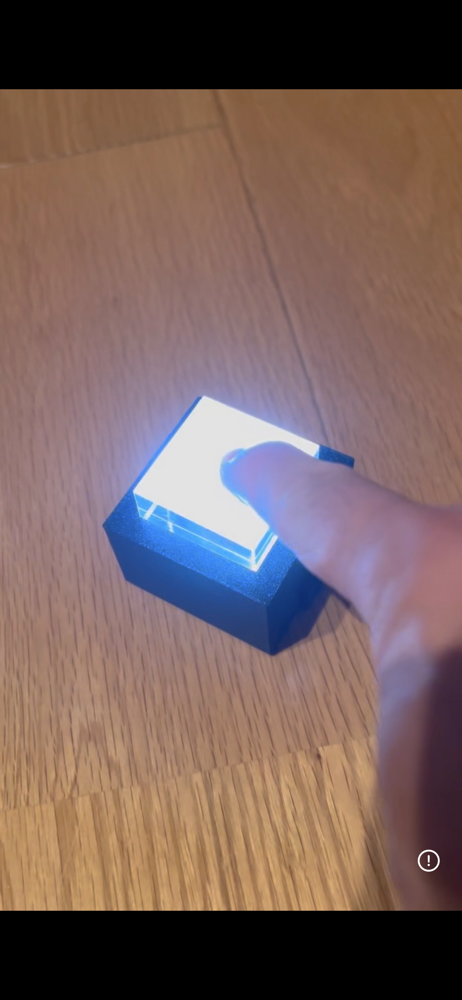

CASE 01マニアックな「偏愛」を、唯一無二の専門性へ
オリジナル押しボタン制作の探究
「ただボタンを押すのが好き」から、自分だけのボタンを創り出すクリエイターへ。
- 01. DISCOVER 日常の中で見つけた「エレベーターや機械の押しボタンがたまらなく好き」という強い好奇心。「見る・押す」だけでなく「自分だけの最高のボタンを作ってみたい」という問いが生まれました。
- 02. MAKE レーザーカッターでの木材加工や3Dプリンター、LEDなどの電子部品を組み合わせ、押し心地や光り方に徹底的にこだわったオリジナルの押しボタンを設計・制作。何度も試作を重ねて仕組みを追求しました。
- 03. STORY 作品や制作過程を発信したことで、その熱量が周囲に伝播。自分の言葉でこだわりを語り、ワークショップの開催やメディアでの紹介など、同じ「好き」を持つ人たちや企業とつながる活動へと広がっています。
💡 保護者の方へ
一見ニッチでマニアックなこだわりも、否定せずに「つくる環境」と掛け合わせることで、誰にも真似できない自信と専門性に変わります。